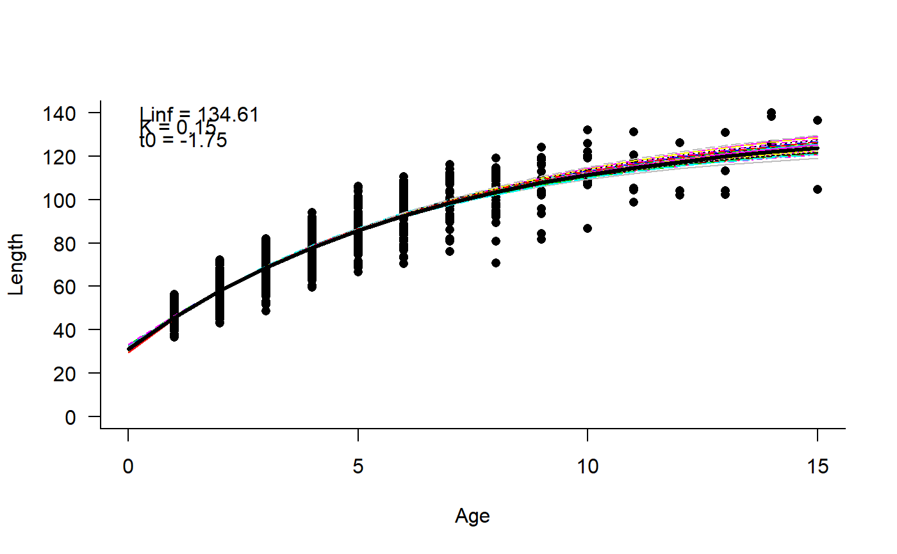

Generate bootstrapped estimates of von Bertalanffy growth parameters from length-at-age data
Growth2OM.RdThe von Bertalanffy model is fitted to length-at-age data and bootstrapped to
provide either OM@nsim or nsim estimates of Linf, K, and t0 parameters.
LenCV is also estimated from mean growth curve and the observed length-at-age data.
Growth2OM(data = NULL, OM = NULL, nsim = 48, seed = 101, plot = TRUE, msg = TRUE)
Arguments
| data | A data.frame with columns names 'Age' and 'Length' |
|---|---|
| OM | Optional. Object of class |
| nsim | Optional numeric. If an OM is not provided, nsim is used. |
| seed | Optional numierc. If an OM is not provided, seed is used in |
| plot | Logical. Plot the data and model fits? |
| msg | Logical. Display messages? |
Value
An OM with cpars slot populated with Linf, K, t0 and LenCV values, or a data.frame.
Details
The function either returns an OM with the cpars slot updated with estimated values, or a data.frame with the estimated values.
Examples
# Simple model to generate length-at-age data OM <- DLMtool::testOM OM@nsim <- 2 Hist <- runMSE(OM, Hist=TRUE)#>#>#>#>#>#>#>#>N <- Hist$AtAge$N[1,,1] * Hist$AtAge$Sl_age[1,,1] meanL <- Hist$AtAge$Len_age[1,,1] sdL <- Hist$AtAge$Len_age[1,,1] * 0.1 nsamp <- ceiling(N/sum(N) * 1000) Length <- unlist(sapply(1:length(meanL), function(i) rnorm(nsamp[i], meanL[i], sdL[i]))) Ages <- rep(1:length(N), nsamp) data <- data.frame(Age=Ages, Length=Length) # Return an OM with cpars populated OM@nsim <- 48 newOM <- Growth2OM(data, OM)#>#># Return a data.frame estPars <- Growth2OM(data)#>#>